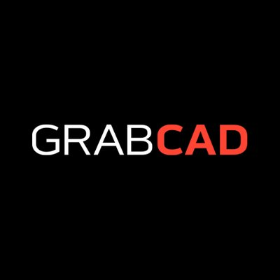
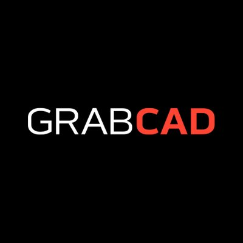

Design Process
12/5/2018
Everyone wants to have the best robot design, out of millions of possibilities. 50 different ideas may be flying around, but how do you know which one is best? Being such a big desicion that will affect the rest of your season, we've made sure to provide you with some guidance the get track.
1. How do you get the whole team involved in the design process?Thanks to our weekly design meetings, everybody had an idea about what was going on during the design process. During these meetings, we discuss concepts for each subsystem in development, and we debate on the best designs. Although not everyone physically builds every subsystem, everybody contributes to the development of the final design.
2. What do you look for in a good design?A good design can be defined in many ways, but we put lots of emphasis on manufacturability, time constraints, and of course, functionality.
Manufacturability
Functionality/Reliability
Time Constraints
3. How do you train rookie members in hardware?
The best way to train rookies is through immersion. Pair veterans with rookies for the best results. The veterans will be able to teach the rookies through example, and the rookies will provide an extra pair of hands for creating a great robot, and a new point of view for robot design (I can confirm that having a rookie in my pocket, available to help with anything, is extremely useful). The rookies will quickly learn the ways of robotics just by watching the veterans work.
4. How do you decide what design to use?As mentioned previously, in the earlier stages of the design process, we have weekly design meetings, sometimes even multiple times each week. During the meetings, everybody on the team is present, and we discuss multiple possible designs for each subsystems. Every idea is considered, even if it sounds crazy, or not fully thought out by the suggester, as others present can help to flesh it out. Once we have all the ideas on the table, we narrow it down to the most feasible two or three by thinking through how each one will function, and how well it will accomplish our goals. Often times, we’ll have a parent mentor present to help guide us and ensure we aren’t going straying too far from realistic designs. For these narrowed down ideas, we pick each one apart, trying to find all of the possible benefits, and, especially, drawbacks. Using this comprehensive analysis of each design, we can determine which one will best follow our criteria for a “good design” as listed above. When have our top design picked out, however, the discussion is far from over. We then must proceed to go into the deeper, more intricate aspects that are required for us to turn this design into a working robot component.
5. How do you get everyone working in parallel on hardware and software?One of the most helpful things that we use is a software called GrabCAD, which allows everybody on the team to collaborate with CAD. We are all members of a single project, and we share a folder with all of the parts in it. This also allows us to work on CAD both at home and in the robot room. For example, at the end of an after school session, anyone that worked will CAD “pushes” their changes to GrabCAD. Then, at home, someone else can download the updates, and continue working on the robot. For software, we utilize GitHub to sync of all of our code. Similarly to GrabCAD, Github allows all of software access to the same repository, and the ability to push and pull any changes made from anywhere. Both of these platforms help our team to be on the same page with each other and seamlessly pick up where another member has left off.
 GitHub and GrabCAD are great collaboration tools. 
GitHub and GrabCAD are great collaboration tools. 